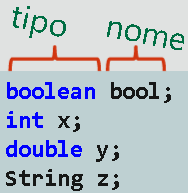
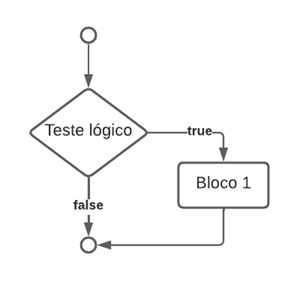
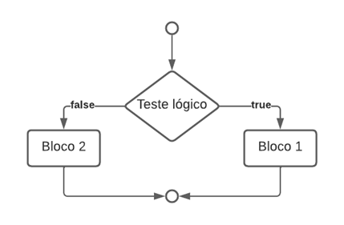
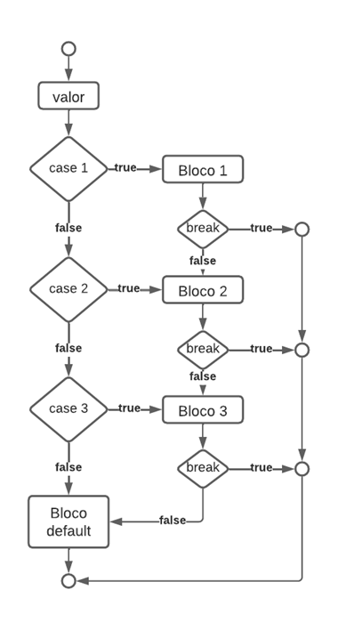
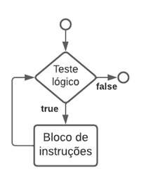
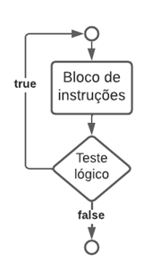
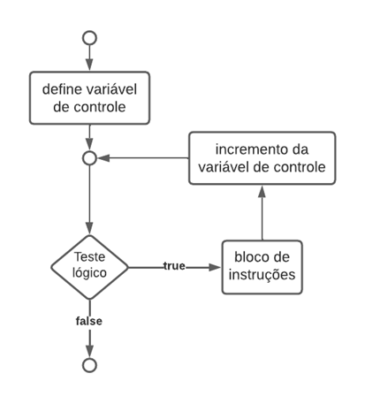

Resumo da Matéria
Introdução
O foco da disciplina de Linguagem de Programação é aprender conceitos básicos de programação usando a linguagem Java. Experimentamos variáveis para armazenar dados, estruturas de decisão (como if-else e switch) para controlar o fluxo de execução e estruturas de repetição (como for, while e do-while) para realizar tarefas iterativas. Além disso, aprendemos a trabalhar com vetores para manipular coleções de dados e definir e utilizar funções que promovem a clareza e a reutilização do código, além de modularizar e organizar o código. O desenvolvimento de soluções bem-estruturadas requer esta base Java sólida.
IntelliJ:

O IntelliJ IDEA é um ambiente de desenvolvimento integrado (IDE) popular entre os desenvolvedores que fazem software em várias linguagens de programação, principalmente Java. O IntelliJ IDEA, desenvolvido pela JetBrains, tem funcionalidades sofisticadas como autocompletar inteligente, refatoração de código, depuração integrada, análise estática, ferramentas de teste e integração com sistemas de controle de versão como Git. Suas funcionalidades extensas e interfaces fáceis de usar aumentam a produtividade dos desenvolvedores, tornando o processo de desenvolvimento mais agradável e eficiente.
Variáveis:
Em Java, as variáveis são espaços de armazenamento capazes de armazenar dados modificáveis. Elas têm um nome, um tipo de dado e um valor. Entre os tipos de variáveis estão int, double, boolean e char. Em programas Java, os dados são armazenados e alterados por variáveis.
Operadores:
Uma variedade de operadores são suportados pelo Java para realizar operações em variáveis e valores. Os operadores que estão incluídos são os operadores aritméticos (+, -, *, /, %), os operadores de atribuição (=, +=, -=, *=, /=, %=) e os operadores de comparação (==,!Operadores lógicos (&&, ||,!), além de =, <, >, <= e >=.
Conversões entre Tipos de Variáveis
As variáveis podem ser convertidas de um tipo para outro com casting e métodos de conversão explícita, como parseInt() e parseDouble(), estão disponíveis no Java. Em certos casos, a conversão automatica entre tipos compatíveis também é possível.
Keyboard Input Java
Em Java, a classe Scanner ou a classe BufferedReader podem ser usadas para receber entradas do teclado. A classe BufferedReader é mais eficiente para a entrada de grandes volumes de dados, enquanto a classe Scanner é mais simples e oferece métodos para ler vários tipos de entrada. Ambos são úteis para ler entradas do teclado nos programas Java.
Estruturas de decisão
Em Java, as estruturas de decisão permitem que os programas escolham vários caminhos de execução dependendo das circunstâncias. Elas executam vários blocos de código usando testes lógicos para gerenciar o fluxo do programa. As estruturas de decisão if/else e switch são as mais utilizadas em Java.
if/else:
Um bloco de código pode ser executado se uma condição for verdadeira e outro bloco de código pode ser executado se a condição for falsa no Java. Para testar sequencialmente várias condições, pode ser estendido adicionando else if.
if:
else:
else if:
Em Java, o O else if pode ser usado para testar várias condições em uma estrutura de decisão if/else. Ele permite a encadeamento sequencial de várias condições, executando blocos de código distintos para cada condição verdadeira. Um bloco opcional else pode ser executado se nenhuma das condições if ou else if for atendida. Quando há várias opções a serem consideradas, esta estrutura é útil porque oferece um controle de fluxo mais preciso.
switch:
Em Java, o switch é uma estrutura de decisão que permite que um bloco de código seja executado de acordo com o valor de uma expressão. Ele executa o bloco de código que corresponde ao valor da expressão após avaliar a expressão. É particularmente vantajoso em situações em que vários casos devem ser tratados de maneira semelhante.
Estruturas de repetição
Em Java, as estruturas de repetição permitem que um bloco de código seja executado repetidamente enquanto uma condição específica for verdadeira. Elas permitem realizar ações repetitivas ou iterar sobre coleções de dados de forma eficiente. Em Java, as três estruturas de repetição principais são while, do/while e for.
while:
Em Java, o loop while executa um bloco de código enquanto uma condição booleana é verdadeira. Antes de cada iteração do loop, a condição é verificada. Isso significa que, se a condição for falsa na primeira verificação, o loop pode não ser executado nenhuma vez.
do/while:
Em Java, o loop do/while é idêntico ao loop do while, mas após a execução do bloco de código, a condição booleana é verificada. Não importa se a condição é verdadeira ou falsa, isso garante que o bloco de código seja executado pelo menos uma vez.
for:
Em Java, o loop for é frequentemente usado quando você sabe quantas vezes um bloco de código precisa ser executado. É capaz de inicializar uma variável de controle, estabelecer uma condição de término e, em cada iteração, aumentar ou diminuir a variável de controle. É particularmente útil para iterar sobre coleções e arrays.
Vetores
Vetores, também conhecidos como arrays unidimensionais, são estruturas de dados que armazenam uma coleção de elementos do mesmo tipo que podem ser acessados por um índice. Eles armazenam listas de elementos e permitem acesso rápido a cada elemento.
Matrizes
Estruturas de dados conhecidas como arrays multidimensionais armazenam coleções de elementos de várias dimensões, como linhas e colunas. A matriz bidimensional, que pode ser visualizada como uma tabela de elementos, é a mais comumente encontrada. Para representar dados em grades e tabelas, eles são úteis.
Funções
Em Java, as funções, também conhecidas como métodos, são blocos de código que realizam uma tarefa específica e podem ser reutilizados em várias partes do programa. Elas ajudam a organizar o código e torná-lo mais legível e fácil de manter. Para receber dados de entrada, uma função pode usar parâmetros, processá-los e gerar um resultado. Existem vários tipos de funções, incluindo funções que retornam um valor usando a palavra-chave return ou funções que não retornam nada usando void. As funções também podem ser sobrecarregadas para aceitar vários conjuntos de parâmetros.
Funções Recursivas
Funções recursivas são aquelas que chamam a si mesmas para resolver um problema que pode ser dividido em outros problemas semelhantes. Elas são particularmente úteis para problemas com estruturas repetitivas ou que podem ser definidas como estruturas independentes. Para evitar loops infinitos e stack overflow, a recursão deve sempre ter uma condição de parada.